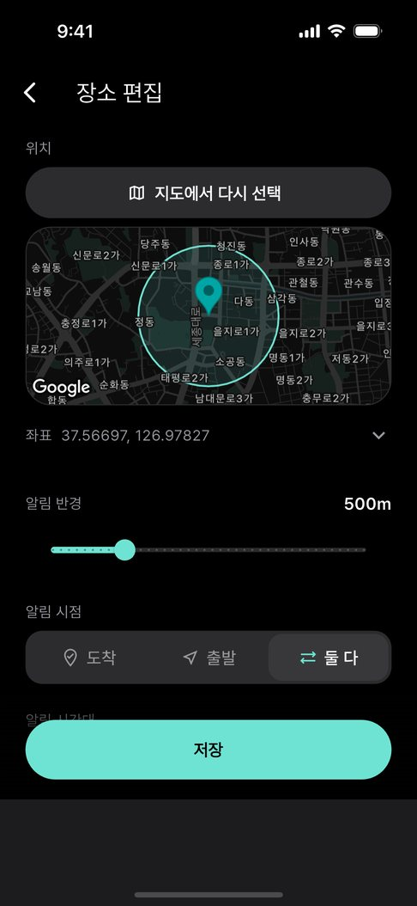
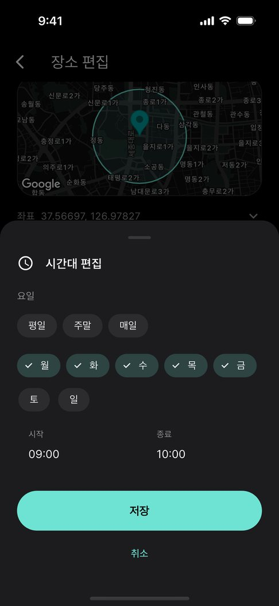
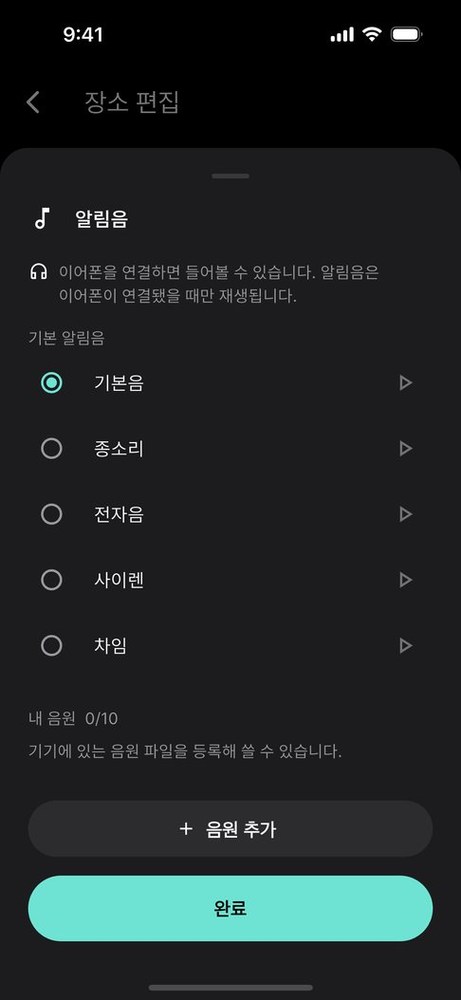
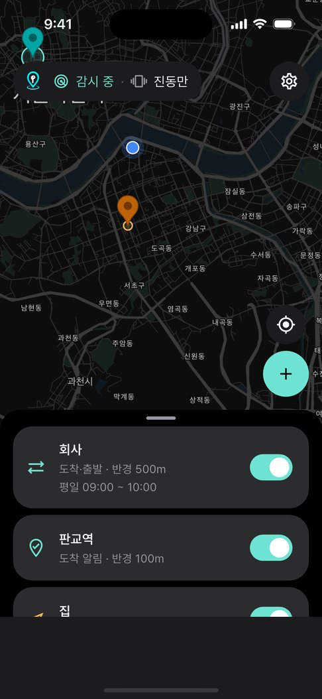

01
지도에서 찍고,
반경만 정하면 끝.
정류장·역·회사, 어디든. 50m부터 2km까지 원을 보면서 정하세요.

버스 · 지하철 · 셔틀 도착 알림
도착하면 진동으로. 이어폰을 꽂았을 때만 소리로.
스피커로는 절대 울리지 않는 위치 알림.

도착하는 순간
반경 안에 들어서면 바로 진동. 앱을 열어 두지 않아도 백그라운드에서 지켜봐요.
판교역까지 이동 중
셔틀버스
통근·통학 셔틀은 정류장 이름도, 안내 방송도 없죠. 창밖만 보다 지나치기 쉬워요. 회사 정문, 기숙사 앞, 공항 셔틀 하차 지점을 한 번만 찍어 두세요.
사용법
01
정류장·역·회사, 어디든. 50m부터 2km까지 원을 보면서 정하세요.

02
장소마다 알림 시점을 따로. 요일과 시간대를 정하면 그때만 울려요.

03
줄이어폰·USB-C·블루투스. 연결이 확인될 때만 소리, 아니면 진동만.

04
버스에서 화면을 보지 않고 엄지로 눌러도 되게 크게 만들었어요.
기능
등록만 해 두면 백그라운드에서 지켜봐요. 위치는 기기 밖으로 나가지 않아요.

약하게 · 보통 · 강하게
50m부터 2km까지
연결된 장치를 허용 목록으로 확인해요.
요일·시간대를 정하면 그때만 울려요.
이동 가이드
자주 묻는 질문
네. 지도에서 내릴 정류장이나 역을 등록해 두면, 그 반경 안에 들어서는 순간 진동으로 깨워 드립니다. 앱을 열어 두지 않아도, 화면이 꺼져 있어도 동작합니다.
아니요. 이어폰(줄이어폰·USB-C·블루투스)이 연결된 것을 확인한 뒤에만 소리를 냅니다. 연결되지 않았으면 진동만 울리고, 스피커로는 절대 소리가 나지 않습니다.
위치를 계속 켜 두지 않습니다. 장소에서 멀리 있을 때는 운영체제의 지오펜스에 맡기고, 가까워졌을 때만 정밀하게 확인해 배터리 사용을 줄입니다.
전송되지 않습니다. 도착 판정은 전부 휴대전화 안에서 이루어지고, 등록한 장소와 기록은 기기에만 저장됩니다. 회원가입도 없습니다.
갤럭시 워치와 Apple Watch 에서 휴대전화 알림을 받도록 설정하면 워치로도 도착 알림이 갑니다. 앱의 설정 › 워치로 알림 받기에서 방법을 안내합니다.
무료입니다. 광고가 포함되어 있으며, 알림이 울리는 화면에는 광고를 두지 않습니다.